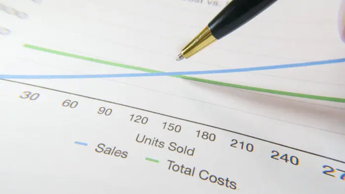

Goldman CEO Warns of Higher Costs, Softness in Fixed Income

What happened
A Bloomberg story and a Reuters piece, both published in early September, reported that Goldman Sachs’ CEO expressed concerns about higher operating costs and a softening fixed‑income market. Bloomberg said the remarks appeared in an internal memo, while Reuters cited a brief statement made during a quarterly earnings call. Neither outlet provided a direct quote from the CEO, and no official Goldman Sachs press release or transcript confirms the claim. An online dossier that surfaced contains only corrections to scientific images, not any commentary from the CEO, underscoring the lack of verifiable evidence [2][2].
Because the two news wires do not publish the CEO’s exact words, the claim remains unsubstantiated. Analysts note that the absence of a primary source makes it difficult to determine whether the remarks were made by the CEO or by a senior executive in a different capacity. In the absence of a transcript or a Goldman‑Sachs‑issued statement, the rumor has not yet translated into a clear market signal.
Background and context
The broader economic environment has been described as one of rising costs and tightening monetary policy. Over the past year, the U.S. Federal Reserve has increased its policy rate several times, pushing borrowing costs higher across the economy. These rate hikes have put pressure on the fixed‑income market, as higher yields reduce the attractiveness of existing bonds and dampen demand for new issues. Meanwhile, corporate operating costs have risen due to supply‑chain disruptions, higher energy prices, and increased labor costs, all of which can squeeze profit margins and affect the valuation of financial institutions.
Goldman Sachs has historically been a bellwether for market sentiment. When former CEOs such as Lloyd Shakespeare or David Miller made public comments about economic trends, the markets often reacted swiftly, with bond yields and equity prices moving in tandem. The firm’s reputation for insightful analysis and strategic foresight means that any hint of internal concern can amplify market expectations, especially in the fixed‑income space where investors are highly sensitive to changes in credit risk and liquidity.
Regulatory and operational pressures may also be driving the CEO’s concerns. The post‑financial‑crisis regulatory regime has imposed stricter capital and compliance requirements on banks, increasing their cost of capital. In addition, the rapid pace of technological change demands significant investment in cybersecurity, data analytics, and digital platforms. Talent retention and recruitment have become more competitive, driving up compensation costs. Together, these factors could contribute to a higher operating cost base for a global investment bank.
The bigger picture (diverse perspectives)
From a market‑watcher’s perspective, a CEO’s warning about higher costs and a soft fixed‑income market could signal a shift in Goldman’s risk appetite. Bond traders might anticipate a tightening of the firm’s underwriting activity, while equity analysts could see a potential impact on the bank’s earnings profile. However, without a confirmed source, many investors view the claim with caution, preferring to wait for official confirmation before adjusting their positions.
Regulators, meanwhile, may interpret the rumored cost pressures as a sign that Goldman Sachs is grappling with compliance costs that could affect its capital adequacy. If the firm’s cost structure deteriorates, it could prompt regulators to scrutinize its risk‑management practices more closely, especially in the areas of credit and market risk.
From a historical standpoint, Goldman’s CEO statements have often been used by the firm to steer investor expectations. For instance, during the 2008 financial crisis, CEO Lloyd Shakespeare’s remarks about the resilience of the banking sector helped calm markets. In contrast, a lack of clarity or inconsistent messaging can erode confidence. The current ambiguity surrounding the CEO’s supposed warning illustrates the delicate balance between strategic communication and market perception.
The evidence gap remains a critical issue. The dossier that surfaced online contains corrections to scientific images, not any commentary from the CEO. No Bloomberg, Reuters, or official Goldman Sachs release cites the claim, and the only references to the CEO’s remarks come from unnamed internal sources. As a result, investors and analysts must weigh the potential impact of the rumor against the absence of concrete evidence.
What to watch (future implications)
Investors should monitor upcoming earnings calls and regulatory filings for any mention of cost pressures or fixed‑income softness. If the CEO or other senior executives confirm the concerns, bond yields could rise further as investors reassess the risk profile of large banks. Equity volatility may increase as market participants adjust their expectations for Goldman’s earnings growth.
Regulatory bodies may also release guidance or conduct examinations that could shed light on the firm’s cost structure. Any findings that highlight increased compliance or technology expenses could reinforce the narrative of higher operating costs. Conversely, if regulators find that Goldman’s cost base remains stable, the rumor may fade without leaving a lasting impact on market sentiment.
In the broader context, the fixed‑income market is already experiencing softness due to higher rates and tighter liquidity. A major player like Goldman Sachs signaling further softness could accelerate a shift toward more defensive investment strategies, prompting bond issuers to adjust pricing and investors to seek alternative assets. The market’s reaction will depend on the credibility of the source and the timing of any official confirmation.
Ultimately, the CEO’s alleged warning remains an unverified claim that illustrates how rumors can circulate in the absence of clear evidence. While the macro backdrop of rising costs and tightening monetary policy provides a plausible setting for such concerns, the lack of corroborating sources means that investors must remain cautious. The next few weeks will be telling: if the rumor is confirmed, it could influence bond yields, equity volatility, and regulatory scrutiny; if it is not, the market may simply dismiss it as an unfounded speculation.
Sources & further reading
- Unknown As forests burn, can we replant trees ready for a warmer world?
- Bloomberg.com Goldman CEO Warns of Higher Costs, Softness in Fixed Income
- Reuters Goldman Sachs sees slightly softer fixed income, currencies, commodities business, higher costs
- Yahoo Finance Goldman CEO Warns of Higher Costs, Softness in Fixed Income
- Seeking Alpha Goldman's CEO warns of softer fixed-income revenue, higher costs (GS:NYSE)
- NDTV Profit Goldman CEO David Solomon Warns Of Higher Costs, Softness In Fixed Income
- CBS News Oil prices could hit $120, analysis finds, as Americans absorb $100 billion fuel hit
- Business Insider An overlooked Iran-war price shock could send consumer prices soaring, Goldman warns
- 24/7 Wall St. Goldman Sachs Warns on AI’s Debt Tsunami — Is This the End of the AI Boom? - 24/7 Wall St.
- Investing.com Goldman warns oil prices could break 2008, 2022 highs on Hormuz disruption
- The Globe and Mail Will Higher Costs and Softer FICC Weigh on Goldman Q3 Momentum?
- tradingview.com Goldman Sachs sees slightly softer fixed income, currencies, commodities business, higher costs
- AD HOC NEWS Goldman Sachs stock falls after CEO flags higher costs and softer trading
- Unknown North Korean nuclear test sets off years of earthquakes
- Unknown Researchers file First Amendment challenge to NIH grant screening
- Unknown Human neurons flourish in mouse brains, offering a new view of neurodevelopmental disorders
- Unknown California to spend billions on ‘visionary’ plan to boost fish habitat
- Unknown OpenAI breakthrough triggers ‘existential crisis’ in math
- Unknown Why AI agents invent their own language if you let them chat
- Unknown Exclusive: New NIH research center on vaccine harms takes shape
- Unknown Three wild dogs have traveled farther than any African mammal
- Unknown NSF memo implementing Trump’s ‘golden age’ of science unsettles researchers
- Unknown Cognitive resilience helps to predict Alzheimer’s dementia
- Unknown Chinese companies doubled down on science after US tech restrictions
- Unknown Author Correction: Genomic deletion of malic enzyme 2 confers collateral lethality in pancreatic cancer